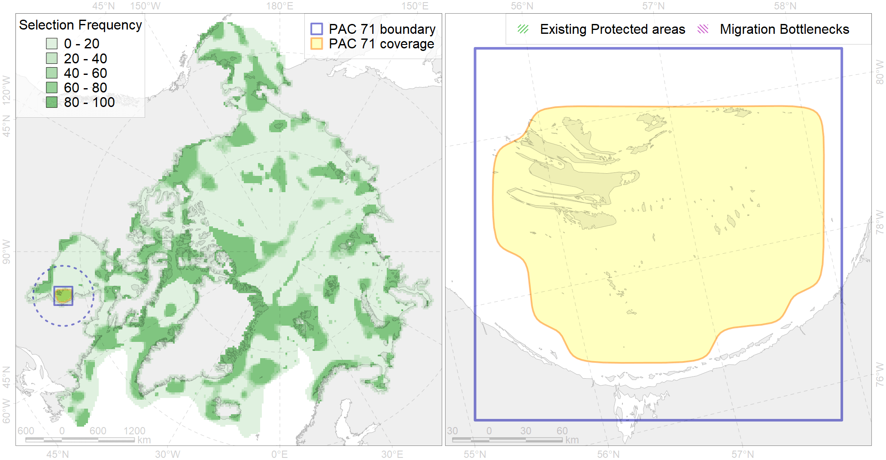

Region 71
Region 71
“ArcNet” scenario 33 achievement for region 71.
Use Accenter for advanced mode.

0
CFs inside of Region completely
3
CFs inside of Region at quarter
3
Complete-targets achievement by Region
4
Half-targets achievement by Region
| CF | Name | Target Achievement for Region | Proportion of Target Achievement in Region | Amount Proportion in Region |
|---|---|---|---|---|
| 6065 | Common eider (Somateria mollissima sedentari) Hudson Baywintering grounds | 104.9% | 97.1% | 88.5% |
| 5013 | Beluga of the Eastern Hudson Bay summer core distribution | 91.3% | 90.7% | 69.9% |
| 7030 | James Bay enclave | 145.3% | 49.5% | 29.0% |
| 6072 | King eider (Somateria spectabilis) Canadian winetring grounds | 41.5% | 35.8% | 20.1% |
| 7168 | IV.2.1. shallow James Bay | 264.6% | 31.4% | 17.1% |
| 9017 | polar bear of the SH (Southern Hudson Bay) subpopulation distribution | 39.9% | 33.9% | 13.4% |
| 1003 | Atlantic Walrus Wintering Areas in Canada | 17.0% | 14.9% | 11.5% |
| 9035 | polar bear denning areas of SH (Southern Hudson Bay) subpopulation | 16.4% | 14.0% | 10.6% |
| 4031 | Feeding area of the Brook Trout (Salvelinus fontinalis) (F 29) | 40.0% | 16.6% | 6.3% |
| 4007 | Feeding/nursery area of the Cisco (Coregonus artedi) (F 13) | 14.6% | 10.2% | 5.1% |
| 1011 | Atlantic Walrus haulouts in Nunavut and West Greenland | 4.9% | 4.9% | 4.7% |
| 2010 | Bearded seal whelping areas in the Hudson Bay | 15.9% | 15.9% | 4.1% |
| 4048 | Feeding/nursery area of the ogac (Gadus ogac ) (F 41) | 29.0% | 7.2% | 3.7% |
| 4075 | Fish zoogeography, Arctic Region, High-Arctic Shelf Province, Hudson District | 38.2% | 13.7% | 3.7% |
| 2048 | Ringed seal whelping areas in the Hudson Bay area | 14.2% | 13.3% | 3.6% |
| 1002 | Atlantic Walrus Summer Distribution in Canada | 7.7% | 5.3% | 2.7% |
| 6015 | Black guillemot (Cepphus grylle mandti) breeding grounds | 21.4% | 4.6% | 2.6% |
| 2019 | Harbour seal range in the North Atlantic region | 37.0% | 5.6% | 2.4% |
| 4011 | Feeding area of the Lake whitefish (Coregonus clupeaformis) (F 16) | 4.9% | 4.6% | 2.2% |
| 4028 | Feeding/migration area of the Atlantic salmon (Salmo salar) American populations (F27) | 16.4% | 5.3% | 2.1% |
| 3129 | polynya Hudson E | 10.4% | 4.6% | 1.4% |
| 4029 | Feeding area of the Arctic charr (Salvelinus alpinus), anadromous populations (F28) | 3.2% | 2.8% | 1.3% |
| 3035 | Marginal Ice Zone distribution in July in the Hudson Bay LME | 4.6% | 3.2% | 1.1% |
| 4056 | Distribution of the American Plaice (Hippoglossoides platessoides) (F 47), European populations | 31.8% | 2.0% | 1.1% |
| 4035 | Feeding area of the Lake trout (Salvelinus namaycush) (F32) | 5.1% | 2.1% | 1.0% |
| 6083 | Thick-billed murre (Uria lomvia lomvia) wintering grounds | 3.6% | 2.5% | 0.9% |
| 4003 | Range of the Atlantic Capelin (Mallotus villosus) (F10) | 28.0% | 2.4% | 0.9% |
| 4017 | Feeding/ migration area of the Greenland Shark (Somniosus microcephalus) (F1) | 3.6% | 2.1% | 0.8% |
| 7169 | IV.2.2. central Hudson Bay | 14.1% | 4.2% | 0.7% |
| 5112 | Arctic Cetaceans (beluga, bowhead, narwhal) winter habitats as predicterd by MIZ | 1.3% | 1.1% | 0.6% |
| 4046 | Range of the Thorny Skate (Amblyraja radiata) (F 3) | 6.2% | 1.2% | 0.5% |
| 4053 | Range of the Fourhorn Sculpin (Myoxocephalus quadricornis) (F 45), Euro-Asian populations | 10.2% | 0.6% | 0.4% |
| 4041 | Range of the Polar Cod (Boreogadus saida) (F35) | 2.4% | 0.9% | 0.3% |
| 3022 | Marginal Ice Zone distribution in April in the Hudson Bay LME | 1.5% | 0.4% | 0.2% |
| 7028 | Hudson Bay enclave | 0.9% | 0.6% | 0.1% |
| 6029 | Glaucous gull (Larus hyperboreus euceretes) breeding grounds | 0.2% | 0.0% | 0.0% |
| 8037 | Salt marshes of the Hudson Bay LME | 0.1% | 0.0% | 0.0% |